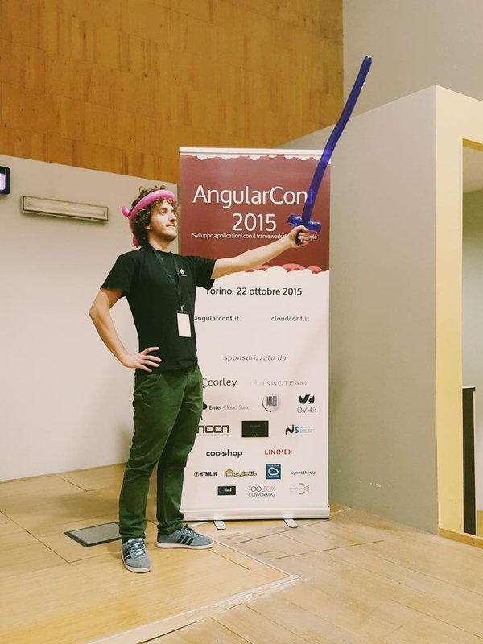
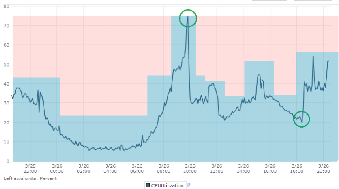

Created by Gianluca Arbezzano
|  |
Gianluca Arbezzano Full Stack Developer Maintainer Doctrine Module and open source contributor |
To increase control of system
To mitigate the security issue
To gurantee scalability
Scalability <=> High avalability.
Scalability is the ability of a system, network, or process to handle a growing amount of work in a capable manner or its ability to be enlarged to accommodate that growth. cit. Wikipedia.
The differce between this peaks for a lot of time is unused
Disaster recovery
and we hide a lot of them!
it is a highly scalable, fast, container management service that makes it easy to run, stop, and manage Docker containers on a cluster of Amazon EC2 instances
by AWS
Container instance: An Amazon EC2 that is running the Amazon ECS Agent. It has been registered to ECS Cluster
Cluster: It is a pool of Container instances
Task definition: A description of an application that contains one or more container definitions
{
"family": "",
"containerDefinitions": [
}
}
Each Task definition running is a Task
Take your coupon